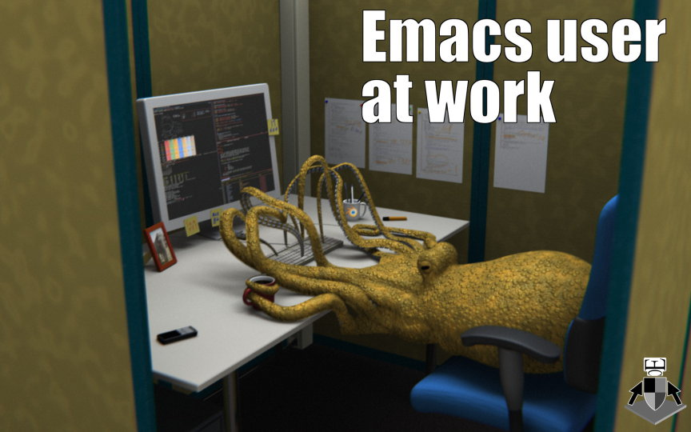
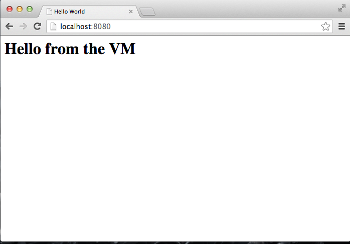
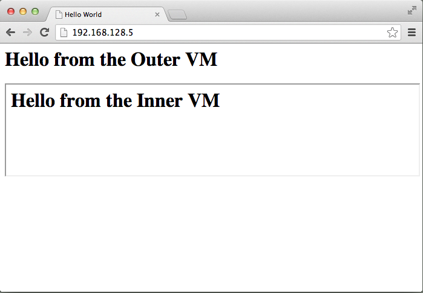
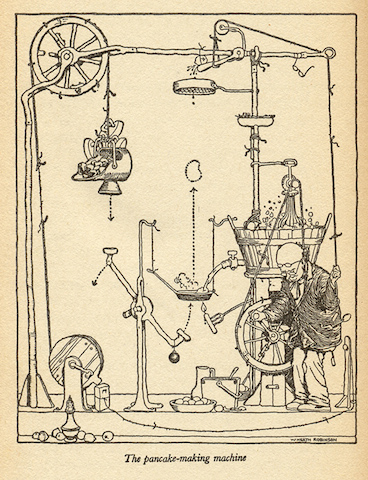
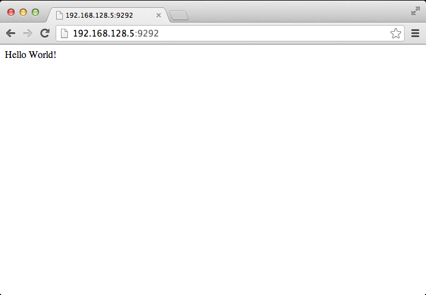
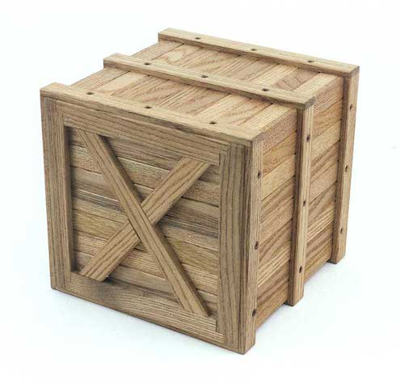

Vagrant
Shipping Your Dev Box
By Barry Gordon ( @brrygrdn )
About me
Professional Vagrant
Contract Developer
The Problem with Pets

The Problem with Pets
- I think he's awesome
- You think he's annoying
- I will tolerate his quirks
- You won't
- I will rush to treat health problems
- You're only sympathetic because you probably have a pet too
- Replacing him is A Big Deal as he's unique
The Problem with Pets
Basically, they're subjective and precious
Of Clouds and Cattle
Of Clouds and Cattle
- They are many
- They each fulfill a single purpose
- They are homogenous
- If they get ill, we replace them
- They're easily reproduced
Of Clouds and Cattle
Virtualisation is ubiqious in production
The Precarious Life of a Dev Box
The Precarious Life of a Dev Box
Its a pet because it supports your workflow and provides your digital identity
Its cattle because it houses working copies of one or more projects which must be reproducible
The Precarious Life of a Dev Box
As Ruby developers, we have it pretty good:
- We like to use Macs
- We have good package managers
- RVM and rubyenv allow us to pin Ruby versions per project
- Bundler and RVM gemsets allow us to silo gem versions per project
But...
- Windows happens
- Micromanaging package versions is awkward
- When you consider testing tools and native build dependancies we can have quiet a lot of installs
Also, other toolchains don't have it so good
Vagrant lowers development environment setup time, increases development/production parity, and makes the “works on my machine” excuse a relic of the past.
Getting Started
- Setting up:
- Install VirtualBox
- Install the latest version of Vagrant http://downloads.vagrantup.com
- Boot your first VM:
$ vagrant init precise32 http://files.vagrantup.com/precise32.box $ vagrant up - Connecting to your instance:
$ vagrant ssh Welcome to your Vagrant-built virtual machine. vagrant@precise32:/vagrant$
Getting Started: Lifecycle
$ vagrant suspend
[default] Saving VM state and suspending execution...
$ vagrant resume
[default] Resuming suspended VM...
[default] Booting VM...
[default] Waiting for VM to boot. This can take a few minutes.
[default] VM booted and ready for use!
$ vagrant destroy
Are you sure you want to destroy the 'default' VM? [y/N] y
[default] Forcing shutdown of VM...
[default] Destroying VM and associated drives...
$ vagrant up
Bringing machine 'default' up with 'virtualbox' provider...
[default] Importing base box 'precise32'...
Rebuilding is a lot faster because of Boxes
Getting Started: Boxes
What boxes are installed?
$ vagrant box list
precise32 (virtualbox)
Let's install another
$ vagrant box add precise64 http://files.vagrantup.com/precise64.box
Downloading or copying the box...
Successfully added box 'precise64' with provider 'virtualbox'!
$ vagrant box list
precise32 (virtualbox)
precise64 (virtualbox)
Now we can use either box in our Vagrantfiles
Getting Started: Vagrantfile
A Vagrantfile is created via the init command
$ vagrant init precise64
$ vi Vagrantfile
Generated file, minus comments
VAGRANTFILE_API_VERSION = "2"
Vagrant.configure(VAGRANTFILE_API_VERSION) do |config|
config.vm.box = "precise64"
end
Now we can start to provision our development machines
Example: A Simple Apache Server
Vagrantfile
VAGRANTFILE_API_VERSION = "2"
Vagrant.configure(VAGRANTFILE_API_VERSION) do |config|
config.vm.box = "precise64"
config.vm.box_url = 'http://files.vagrantup.com/precise64.box'
config.vm.network :forwarded_port, host: 8080, guest: 80
config.vm.provision :shell, :path => "bootstrap.sh"
end
bootstrap
#!/usr/bin/env bash
apt-get update
apt-get install -y apache2
rm -rf /var/www
ln -fs /vagrant /var/www
index.html
Hello from the VM
Example: A Simple Apache Server
$ vagrant up
Visit http://localhost:8080
Example: Multiple Hosts
Vagrantfile
VAGRANTFILE_API_VERSION = "2"
Vagrant.configure(VAGRANTFILE_API_VERSION) do |config|
config.vm.box = "precise64"
config.vm.box_url = 'http://files.vagrantup.com/precise64.box'
config.vm.provision :shell, :path => "bootstrap.sh"
config.vm.define :outer do |web|
config.vm.network :private_network, ip: "192.168.128.5"
end
config.vm.define :inner do |db|
config.vm.network :private_network, ip: "192.168.128.10"
end
end
index.html
Hello from the Outer VM
index-2.html
Hello from the Inner VM
Example: Multiple Hosts
$ vagrant up
or
$ vagrant up outer
$ vagrant up inner
Visit http://192.168.128.5/
Development = Production
Example: Provisioning with Chef
Why should you use Chef?
- Its a mature provisioning tool you may already use in production
- There are lots of cookbooks already available for most common packages
- Its a lot more maintainable than a big ball of shell script
- You can also use Puppet if you are more familiar with it
To use Chef, we need Librarian...
Example: Provisioning with Chef
( Actually, its optional but I recommend it. )
$ gem install librarian-chef
$ librarian-chef init
create Cheffile
The Cheffile
#!/usr/bin/env ruby
#^syntax detection
site 'http://community.opscode.com/api/v1'
cookbook 'apt'
cookbook 'build-essential'
cookbook 'rvm',
:git => 'https://github.com/fnichol/chef-rvm'
$ librarian-chef install
Installing apt (2.1.1)
Installing build-essential (1.4.2)
Installing chef_gem (0.1.0)
Installing rvm (0.9.1)
Remember to add 'cookbooks/'' to .gitignore
Note: You should probably look at berkshelf instead
Example: Provisioning with Chef
Sinatra Hello World
# Gemfile
source "https://rubygems.org"
gem "sinatra"
# app.rb
require 'sinatra'
get '/' do
"Hello World!"
end
# config.ru
require './app'
run Sinatra::Application
Example: Provisioning with Chef
The Vagrantfile
Vagrant.configure(VAGRANTFILE_API_VERSION) do |config|
config.vm.box = "precise64"
config.vm.box_url = 'http://files.vagrantup.com/precise64.box'
config.vm.network :private_network, ip: "192.168.128.5"
config.vm.provision :chef_solo do |chef|
# This path will be expanded relative to the project directory
chef.cookbooks_path = "cookbooks"
chef.add_recipe 'apt'
chef.add_recipe 'build-essential'
chef.add_recipe 'rvm::vagrant'
chef.add_recipe 'rvm::system'
chef.json = {
rvm: {
rubies: ['2.0.0'],
default_ruby: '2.0.0',
global_gems: [
{ name: 'bundler'},
{ name: 'rake'}
],
vagrant: {
system_chef_solo: '/opt/vagrant_ruby/bin/chef-solo'
}
}
}
end
config.vm.provision :shell,
:inline => "cd /vagrant && bundle install"
end
Example: Provisioning with Chef
$ vagrant up
$ vagrant ssh
vagrant@precise64:/vagrant$ cd /vagrant
vagrant@precise64:/vagrant$ rackup
Visit http://192.168.128.5:9292/
Example: Provisioning with Chef
Let's add MySQL
# Cheffile
+ cookbook 'mysql'
# Vagrantfile
config.vm.provision :chef_solo do |chef|
+ chef.add_recipe 'mysql::server'
...
chef.json = {
+ mysql: {
+ version: '5.5.29',
+ server_root_password: 'password',
+ server_repl_password: 'password',
+ server_debian_password: 'password',
+ allow_remote_root: true,
+ remove_test_database: true
+ }
We don't need to rebuild
$ vagrant provision
We can focus one provisioning block
$ vagrant provision --provision-with chef_solo
Packaging a Box
- Provisioning times will inevitably creep up
- Every Vagrant VM begins life with a .box file
- It's really easy to turn your VM into a new .box:
vagrant package --output ruby-mysql-demo.box
vagrant box add ruby-mysql-demo ./ruby-mysql-demo.box
- Its ready for use in another project's Vagrantfile
Vagrant.configure(VAGRANTFILE_API_VERSION) do |config|
config.vm.box = "ruby-mysql-demo"
config.vm.box_url = 'http://www.example.com/ruby-mysql-demo.box'
end
Packaging a Box
- By default the box is more or less a disk image with the software you want installed
- Configuration of the VM is the responsibility of the new Vagrantfile
- We can include optional defaults for VMs created with our box
# Vagrantfile.pkg
Vagrant.configure(VAGRANTFILE_API_VERSION) do |config|
config.vm.host_name = "ruby-dev-box"
config.vm.forward_port 3306, 3307 # mysql
end
vagrant package --output ruby-mysql-demo.box \
--vagrantfile Vagrantfile.pkg
Welcome to the Team
Press to Start
Vagrant on Windows
- Vagrant command is available via Powershell
- Vagrant creates keypairs for each VM, allowing you to use Putty to SSH into hosts
- You can also turn off headless mode
config.vm.provider :virtualbox do |vb|
vb.gui = true
end
- It's not ideal
- Always use git on the host machine; you'll need a client:
Thanks for listening
Slides and examples are available online https://github.com/brrygrdn/an-intro-to-vagrant